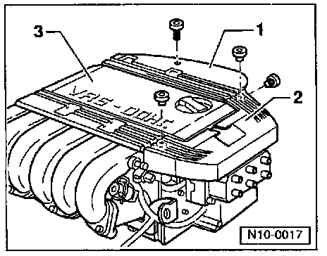
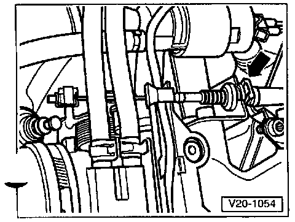
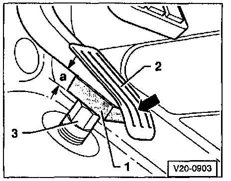
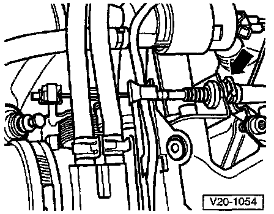

Throttle Cable/Linkage: Adjustments
Accelerator Pedal Cable:Adjusting:
- Remove Spark Plug connectors and cables.

- Remove cable guides -1- and -2-.
- Remove cover above upper intake manifold -3-.
Vehicles with manual transmission:

- Adjust Accelerator Pedal cable by moving retainer clip -arrow- at the support bracket, until throttle valve is fully open (Wide Open Throttle position).
Vehicles with automatic transmission:

- Place spacer -1- between Accelerator Pedal -2- and stop -3-, and hold Accelerator Pedal in this position.
- Dimension -a- = 15 mm (0.59 in.).

- Fully open throttle valve (Wide Open Throttle) by pulling on outer cable. Fasten in this position with retainer clip -arrow-.
- Release Accelerator Pedal.
- Disconnect 2-pin connector from Kick Down Switch (F8) in engine compartment (on the bulkhead).

- Connect hand multimeter (Fluke 83 or equivalent) to Kick Down Switch (F8) using cables from VAG 1594 adapter kit.
- Check resistance at switch.
- Resistance value: infinite Ohms (NO continuity).
- Slowly move Accelerator Pedal in direction of Wide Open Throttle.
Shortly after the kick-down pressure point:
- Resistance must drop to 0 Ohms (continuity).
- Accelerator Pedal must be just off stop.